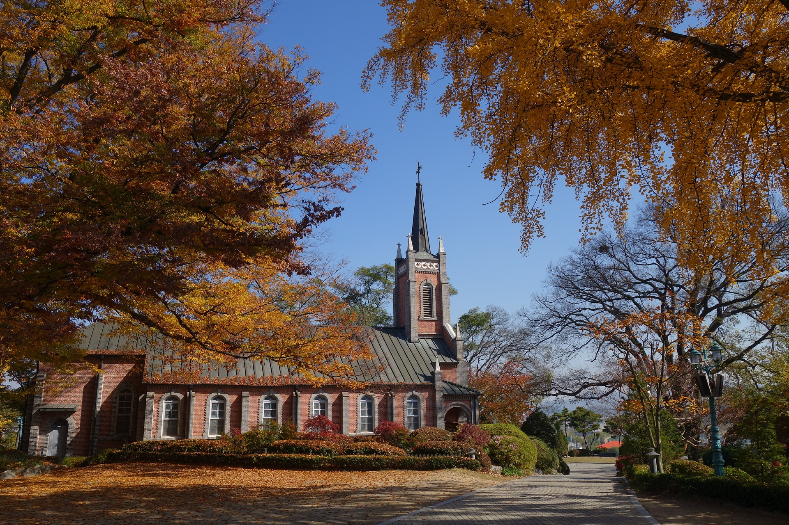

성당이 위치한 1만여 평의 부지는 예로부터 충청도 일대에서 거두어들인 세곡을 저장하던 공세 창고가
있던 공세곶창지로써 성종9년(1478년)부터 영종38년(1762년)까지 근 300년 동안 운영되었던 역사유적지이다.
공세리성당에는 1801년부터 1873년 신유, 병인박해 때 이 지역에서 순교한 32명의 순교자들을 모시고 있는 순교성지 이기에 더욱 경건하고 의미 있는 곳이다.
뾰족한 탑과 높은 천장이 눈에 띄는 전형적인 고딕양식의 건축물은 멀리서 보아도 고풍스럽고 웅장하다.
공세리 성당에서는 수많은 드라마 영화 등이 촬영이되어서 한국관광공사주관 대한민국에서 가장
아름다운 성당으로 선정되었다.
그 외에도 350년이 넘는 국가 보호수 4그루 삼십이순교자현양비, 공세리 성당 박물관, 십자가의 길 등 둘러볼 것이 많다.